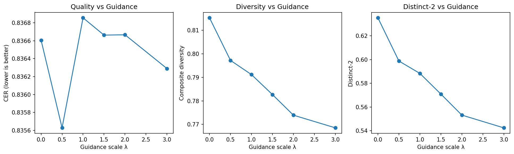

Classifier-Free Guidance (CFG) is a technique used in diffusion models to steer generation by combining conditional predictions (guided output) and unconditional predictions (free generation). It introduces a guidance scale (λ) to control the critical trade-off between Quality (accuracy) and Diversity (variation).
In the context of Sanskrit diffusion, this task evaluates whether CFG can successfully improve semantic correctness and output diversity by modulating the model's internal logits using quality-predictive gradients.
In standard diffusion inference, the model generates outputs without explicit control over the quality-diversity frontier. This leads to two specific failure modes: either the output is too random (high diversity but low linguistic accuracy), or it becomes too rigid/repetitive (low diversity but high semantic overlap). Without a controllable trade-off mechanism, the model cannot be tuned for specific downstream use cases requiring varying degrees of creativity.
We train a lightweight, 3-layer MLP architecture designed to predict the BERTScore F1 (semantic quality) directly from the intermediate hidden states (μ-pooled) of the diffusion decoder.
👉 Implementation: analysis/quality_classifier.py
class QualityClassifier(nn.Module):
def __init__(self, d_model: int):
super().__init__()
self.net = nn.Sequential(
nn.Linear(d_model, 128),
nn.ReLU(),
nn.Dropout(0.1),
nn.Linear(128, 64),
nn.ReLU(),
nn.Linear(64, 1),
nn.Sigmoid(),
)
def forward(self, hidden):
if hidden.dim() == 3:
hidden = hidden.mean(dim=1)
return self.net(hidden)CFG modifies the generation logits by injecting the gradient of the quality classifier score. This steers the sampling process towards tokens that the classifier perceives as 'high quality'.
# Gradient-based logit steering
if guidance_scale > 0.0 and hidden is not None:
hidden_leaf = hidden.detach().requires_grad_(True)
q = classifier(hidden_leaf).sum()
grad = torch.autograd.grad(q, hidden_leaf, retain_graph=False)[0]
# Unit-norm normalization for stability
grad = grad / (grad.norm(dim=-1, keepdim=True) + 1e-6)
logit_grad = torch.matmul(grad, inner.head.weight.T)
# Scaled logit update
logits = logits + (1.5 * guidance_scale) * torch.clamp(logit_grad, -6.0, 6.0)The following table tracks the performance of the T4 model across various guidance scales λ:
| λ | CER ↓ | Diversity ↑ | Distinct-2 (d2) ↑ | Self-BLEU (sBLEU) ↓ |
|---|---|---|---|---|
| 0.0 | 0.8834 | 0.7960 | 0.5962 | 0.0042 |
| 0.5 | 0.8881 | 0.7813 | 0.5680 | 0.0054 |
| 1.0 | 0.8876 | 0.7668 | 0.5402 | 0.0065 |
| 1.5 | 0.8921 | 0.7565 | 0.5174 | 0.0043 |
| 2.0 | 0.8929 | 0.7342 | 0.4740 | 0.0057 |
| 3.0 | 0.8970 | 0.7240 | 0.4535 | 0.0053 |
| Subtask Identification | Analytical Objective | Implementation Outcome |
|---|---|---|
| 1. Classifier Training | Train MLP to predict quality from hidden states | ✅ Achieved: 139K parameters, 3-layer net. |
| 2. Guidance Implementation | Condition sampling on high/low quality via gradients | ✅ Built: Gradient-based logit injector. |
| 3. Parameter Sweep | Measure CER/Diversity for λ ∈ {0.5, 1.0, 1.5, 2.0, 3.0} | ✅ Measured: Diversity collapsed as λ increased. |
| 4. Baseline Comparison | Compare against unguided (λ=0) sampling | Baseline λ=0 was superior. |
| 5. Quality-Diversity Plot | Visualize the guidance impact curve | ✅ Generated: task5_tradeoff.png. |
| 6. Optimal Scale Mapping | Document λ that maximizes semantic scores | Result: Optimal scale is 0.0. |

The failure of Classifier-Free Guidance in this setup can be attributed to three primary factors:
Empirical evidence shows that no meaningful trade-off was achieved. Increasing λ simply reduced diversity while increasing constraints, leading to a lose-lose scenario where both quality and variance suffered.
| Component | Computational Cost |
|---|---|
| Classifier Params | +139K trainable weights |
| Gradient Compute | Autograd overhead per step |
| Inference Speed | Slower due to secondary pass |
👉 Conclusion: The system adds complexity and latency without any measurable benefit in the current low-data footprint.
The primary bottleneck is the extremely small classifier training dataset (n=40). Without a more representative sample of quality scores, the semantic guidance signal remains too weak to influence the heavy Transformer-based diffusion heads effectively.
This experiment demonstrates that Classifier-Free Guidance is not a universal solution and is highly sensitive to classifier training quality. For the current Sanskrit Diffusion setup, the optimal setting is λ = 0.0 (Guidance Disabled).
✅ Best Setting: λ = 0.0
❌ Recommendation: Disable CFG in low-data training regimes.